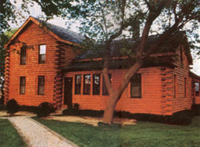
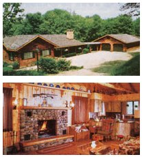

Log homes are attractive, versatile, and relatively energy, efficient, and they range from summer-cottage-simple to palatial. You can own one for far less than an equivalent "standard" dwelling . . . even if you don't have the time or skills to start with a chain saw and a stand of trees. But to get the best deal, you have to understand the many options available when . . .
With the price of the average new home in America soaring over the $100,000 mark in 1985, more and more people are entering the ranks of owner-builders in their search for affordable housing. Of course, constructing a home from the ground up requires talents and time that most of us simply don't have. A kit log home, on the other hand, allows its owner to participate in the building to whatever extent he or she is able, and to effectively save money with every job tackled.
However, to really get the most from your investment when purchasing a log home kit, it's best to put in some effort before construction begins. By looking into the many types of packages available, and knowing which features will be best fitted to your budget, needs, and skills, you can soon be sleeping in your dream home without suffering the nightmare of an unbearable mortgage.
The first choice you'll encounter when "shopping" through the free brochures offered by most log home kit manufacturers is the type of wood that'll make up the walls of your home-to-be. Pine, cedar, cypress, and aspen (among others) are all available . . . and, in the opinion of Ken Myer of American Lincoln Homes (which offers several varieties of wood), cedar is the Cadillac of log home materials. "Cedar is naturally insect-repellent," Ken points out, "and more resistant to in ternal decay and shrinkage than pine." On the other hand, depending upon the total wall space involved, a cedar home kit can be from $1,000 to $10,000 more expensive than its pine counterpart.
Of course, shrinkage shouldn't threaten the structural integrity of a well-designed log home, but it can necessitate early recaulking. In attempting to eliminate this problem, manufacturers of noncedar kits turn to careful drying and-in some cases-to modern wood preservatives.
Rocky Mountain Log Homes and Yellowstone Log Homes both tackle the problem by cutting their lodgepole pine from standing deadwood. Such timbers have experienced much of their shrinking and warping before being harvested, and are therefore quite sta ble. Many kit manufacturers in the eastern states accomplish pretty much the same goal by air- or kiln-drying their logs to a specified moisture content before delivery.
Of course, those well-dried logs can be made even more durable if they're coated with a wood preservative. And many authorities feel that in wetter parts of the country, such as the Pacific Northwest, the use of a preservative is absolutely necessary.
Of the chemicals traditionally used to seal wood, two-pentachlorophenol (penta) and creosote-have recently been proscribed by the Environmental Protection Agency. You're not likely to find these potentially toxic treatments used on log homes made by reputable manufacturers (although it doesn't hurt to check). Instead, the trend today is toward linseed oil and the milder zinc and copper compounds. And many firms use either no treatment or an exceptionally mild one, but recommend that the owner-builder apply a stronger chemical, such as the copper-based Cuprinol, to the exterior of the house after it's built. (The harsher chemicals, if used on the interior walls, could produce health problems . . . especially in sensitive residents.)
Most log home kit companies will send, at your request, material describing the different kits available, and many of these booklets contain a toll-free number that can be used to ask follow-up questions of a represent ative of the company. In order to understand the information you'll receive, though, you'll need to know exactly what's provided in the three types of home kits most commonly available.
[1] Walls only. The most rudimentary-and thus least expensive-log home kits consist of nothing more than the preshaped logs required to build the walls. These low-priced packages can look pretty attractive (at the time of this writing, Yellowstone Log Homes has a number of kits for homes of 1,000 square feet or more in the $3,000 range), but be sure to figure in the cost of all the materials you'll have to buy on the side!
[2] Structural shell. Perhaps the most common log home package, the structural shell typically consists of walls, roof, rafters, and beams. These kits are also reasonably priced (and also require a considerable "over and above" investment before they're turned into livable homes); they're generally sold to contractors and serious owner-builders.
[3] "Complete" homes. Many log home manufacturers now offer complete kits, which include (usually) all of the materials necessary to erect a weathertight shell. The lists of items supplied do vary from one manufacturer to another, though, so be sure you've done adequate research before you buy. (Complete packages might not include spikes, floors, or the picturesque porches lovingly sketched in the artists' renderings.) It's best to remember that anything not specifically mentioned in the materials list is probably a priced-extra option.
Regardless of which package you decide upon, don't be afraid to bargain. It never hurts, for instance, to let the companies you're negotiating with know what their competitors are offering. Sometimes a firm will drop its price to match a low bid, or work out another incentive (an option thrown in at no cost, for instance) in order to make the sale. In my inquiries, I found only one manufacturer that refused to budge from its printed price.
When you're considering the options that might be available to the log home kit buyer, it's best to start from the ground up-because bare ground is exactly what most standard kits will leave you with. "Our homes are built on every type of foundation imaginable," says Larry Marquass of Greatwood Log Homes. "Not everybody wants the same thing, so we leave the foundation as an option to give people a choice." If it's listed as an extra, you can also expect to pay an additional $500 to $3,000 for rough subflooring. If the price isn't listed, be sure to ask.
As noted above, porches and decks are usually optional. However, Michaelene Berger of Midwest Log Home Enterprise offers a money-saving tip: You can sometimes order the decorative posts and railings separately, then add your own decking and roofing to produce a beautiful porch at less than the full "option" cost.
In addition to choosing the type of wood used for your wall logs, as discussed in the beginning of this article, you'll also be able to opt for a variety of log shapes: round inside and out, flat inside and out, or flat inside and round outside. The choice is largely an aesthetic one, though flat interior walls are helpful when it comes time to hang cabinets or install window and door molding. None of the kits that I've studied charge extra for an alternative log shape, but do ask unless the point is made clear in the printed information you receive. (Insulated home kits-with half-log exteriors backed by standard 2 X 6 stud walls-are also available at varying prices and can offer wall R-values of up to 31.56.)
Other popular options include traditional cedar shake roofing (expensive and sometimes prohibited-as a fire hazard-by local zoning), cathedral ceilings (also pricey), and interior partitions (Northern Products Log Homes is one of a few firms that offer packages including interior walls). Your budget will probably battle with your heart over a number of these during the shopping process.
Service seems to be a believed-in byword among most of the firms I've studied, and-though it might not appear on the price sheet-it certainly should be computed into the value of the package. (Midwest Log Home Enterprise offers free seminars for potential buyers. Having attended one, I can attest to the value of the program.)
Make sure you understand exactly what kind of attention you can expect after you've made your purchase. Several firms allocate a prescribed number of hours of on-site assistance, while others offer unlimited availability or even-usually for a fee-owner-builder schools that provide hands-on education in kit building.
Buying or building any type of new home is a demanding and sometimes intimidating procedure. However, if you do your homework before you buy, a log home kit can help you own a distinctive, practical dwellingwhether you're a committed ownerbuilder or someone who wants to work with a contractor to build a home just so-for a lot less than today's average $100,000 price!
EDITOR'S NOTE: If you really want to do it yourself, MOTHER N0. 94 featured a manual on building the traditional hewn-log cabin 'from scratch. " See page 128 for information on ordering back issues.
BROKERAGE:
Dan & Michaelene Berger
Midwest Log Home Enterprise
705 Chestnut Ct.
Algonquin, IL 60102
312/658-4440
MANUFACTURERS AND DEALERS:
Air-Lock Log Co.
P.O. Box 2506
Las Vegas, NM 87701
505/425-8888
Alaska Log Homes & Lodges
P.O. Box 1321
Carlton, WA 98814
509/997-0080
Alta Industries, Ltd.
Box 88, Rt. 30
Halcottsville, NY 12438
914/586-3336
American Lincoln Homes
P.O. Box 669
Battleboro, NC 27809
919/977-2545
American Log Homes, Inc.
P.O. Box 535
Bourbon, MO 65441
314/732-5206
D.L. Anderson & Assoc.
P.O. Box 305
Elk River, MN 55330
612/427-3043
Appalachian Log Structures
P.O. Box 614
Ripley, WV 25271
304/372-2211
Authentic Homes Corp.
Box 1288
Laramie, WY 82070
307/742-3786
Beaver Log Homes
P.O. Box 1145
Claremore, OK 74017
918/341-5932
Cabin Log Co. of America
2809 Hwy. 167 North
Lafayette, LA 70507
318/232-9568
Cedardale Homes, Inc.
P.O. Box 18606
Greensboro, NC 27419
919/854-1753
Cee-Der Log Buildings
4100 6A St. N. E.
Calgary, Alta., Canada T2E 4B1
403/277-0167 or 403/277-8501
Country Log Homes
Rt. 7, P.O. Box 158NS
Ashley Falls, MA 01222
413/229-8084
Crockett Log & Timber Homes
P.O. Box 387
Keene, NH 03431
603/352-4047
Gastineau Log Homes
Hwy. 54, Box 184
New Bloomfield, MO 65063
314/896-5122
Greatwood Log Homes, Inc.
P.O. Box 707
Elkhart Lake, WI 53020
800/558-5812;
in Wisconsin, 800/242-1021
Green Mountain Log Homes
Box 190
Chester, VT 05143
802/875-2163
Hearthstone Builders, Inc.
Rt. 2, Box 434
Dandridge, TN 37725
615/397-9425
Heritage Log Homes, Inc.
Rt. 73, Box 610
Gatlinburg, TN 37738
615/436-9331
Homestead Log Co.
Amwood Product, RR 2
New Creston, IA 50801
515/782-2890
Jim Barna Log Systems
Drawer 1011
Oneida, TN 37841-1011
800/962-4734
or 615/569-8559
Justus Log Homes
P.O. Box 24426
Seattle, WA 98124
800/426-0536
Lincoln Logs, Ltd.
66664 Riverside Dr.
Chestertown, NY 12817
518/494-2426
Lodge Logs by MacGregor
3200 Gowen Rd.
Boise, ID 83705
208/336-2450
Log Home Corp. of North America
P.O. Box 7211
Pueblo West, CO 81007
Lok-N-Logs, Inc.
RD 2, Box ME
Sherburne, NY 13460-0212
607/674-4447
Lumber Enterprises, Inc.
Model Log Homes
75777 Gallatin Rd.
Bozeman, MT 59715
406/763-4411
New England Log Homes, Inc.
2301 State St.
P.O. Box 5056
Hamden, CT 06518
800/243-3551
North American Log Builders Assoc., Ltd .
P.O. Box 369
Lake Placid, NY 12946
518/891-4507
Northeastern Log Homes, Inc.
Box 46
Kenduskeag, ME 04450
802/584-3336
Northern Products Log Homes, Inc.
P.O. Box 616
Bangor, ME 04401
207/945-6413
Real Log Homes
Dept. NSN, P.O. Box 202
Hartland, VT 05048
800/451-4485
R & L Log Buildings, Inc.
Box 237 Mt.
Upton, NY 13809
607/764-8118 or 607/764-8145
Rocky Mountain Log Homes
3353 Hwy. 93
South Hamilton, MT 59840
406/363-5680
Rustic Log Homes, Inc.
1207 Grover Rd.
P.O. Box 1133
Kings Mountain, NC 28086
704/739-3613
Rustics of Lindbergh Lake, Inc.
Condon, MT 59826
405/754-2222
Southland Log Homes
Rt. 2, Box 5B
Irmo, SC 29063
803/781-5100
Timber Log Homes
P.O. Box 300, Austin Dr.
Marlborough, CT 06447
203/295-9529
Town & Country Log Homes
4772 U.S. 131
South Petoskey, MI 49770
616/347-4360
Ward Cabin Co.
P.O. Box 72
Houlton, ME 04730
800/341-1566 or 207/532-6531
Wilderness Log Homes
Rt. 2
Plymouth, WI 53073
800/BEST LOG;
in Wisconsin, 800/852-LOGS
Yellowstone Log Homes
Rt. 4, Box 4004
Rigby, ID 83442
800/5548-197
|
 a rustic traditional |
 Top to Bottom: The many kits available today allow an owner- builder to choose from a great number of designs, including suburban contemporary... The interiors of modern log homes provide a wide range of decorating options. |
|